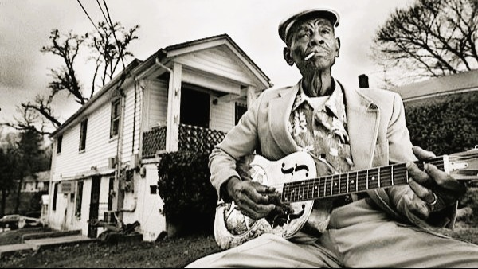

Historia
El sur de Estados Unidos: la cuna del blues
Para entender el blues, primero hay que comprender en qué clase de Estados Unidos nació y por qué surgió. Después de la abolición de la esclavitud en 1865, los afroamericanos técnicamente y en papel, eran libres… pero en la práctica y lo que realmente pasó, terminaron siendo sometidos a nuevas formas de opresión. Es precisamente entre 1865 y 1900 en esta región de Estados Unidos, que aparece el blues (sobre todo en el área conocida como el Delta del Mississippi, una zona rural de campos de algodón, pobreza brutal y segregación racial). Aunque el país había abolido oficialmente la esclavitud, para millones de afroamericanos la “libertad” sólo significaba una forma distinta para servir a alguien más. Las leyes de Jim Crow básicamente permitieron la segregación racial en todo el sur del país, creando escuelas separadas, baños, hospitales y demás que alejaban a las personas afrodescendientes de los ‘blancos’. No sólo era legal discriminar: era casi obligatorio y fue algo que estuvo dentro de la sociedad estadounidense por décadas. Las plantaciones seguían funcionando, ahora con trabajadores mal pagados o atrapados en deudas (incluso surgieron nuevos sistemas de trabajo forzado, como el sharecropping, una especie de arrendamiento agrícola donde terminaban debiendo más de lo que ganaban). Estaban en los mismos campos donde antes eran esclavos, ahora bajo una falsa apariencia de libertad. Las oportunidades reales de salir de la pobreza eran prácticamente nulas.
A esto habría que sumar que la violencia racial era sistemática: linchamientos, ataques y represión política eran parte cotidiana de la vida. Los afroamericanos eran ciudadanos de segunda, sin acceso real a educación, justicia o propiedad. En ese contexto, surgieron las primeras formas de blues. No como un género musical comercial o de entretenimiento, sino como una forma de comunicación y expresión íntima. Los field hollers (gritos de campo), los work songs (cantos de trabajo), los espirituales y las baladas africanas evolucionaron lentamente hacia un nuevo lenguaje musical, basado en la improvisación, en las escalas pentatónicas africanas y en una estructura emocional de llamada y respuesta. El blues no comenzó en los escenarios ni en los estudios de grabación: inició en los campos de trabajo, en las iglesias, en las calles desoladoras y en las casas viejas. No era música para entretener nada más: era una forma de narrar la vida cotidiana, el sufrimiento, el amor perdido, la nostalgia por un hogar que nunca fue seguro. Era la catarsis en su máxima expresión. Mientras Estados Unidos intentaba vender una imagen de prosperidad y modernidad, el blues recordaba que millones vivían marginados y olvidados. Los primeros cantantes y músicos de blues, como Charley Patton o Son House, tocaban en plantaciones, lugares de mala muerte, esquinas de calles o fiestas improvisadas. Muchos de ellos ni siquiera tuvieron la oportunidad de grabar un disco en vida. El blues era un lenguaje cotidiano, no un producto comercial. Y al ser transmitido oralmente, se adaptaba de acuerdo a las experiencias de quien lo cantaba. El Delta Blues, caracterizado por sus guitarras resonadoras, técnicas como el slide (que consiste en pasar barras metálicas o botellas de vidrio sobre las cuerdas de una guitarra) y letras desgarradoras, sería la primera gran manifestación del género. 
 Los primeros blueseros no pensaban en hacer historia, tocaban simplemente para sobrevivir. A continuación les contamos de algunos de los nombres más importantes de esta primera época, los cuales cambiaron para siempre el destino del género.
Son House: Con un estilo crudo y emocional, House incorporó elementos del gospel en su blues, mezclando espiritualidad y desesperación de manera explosiva.
Robert Johnson: Quizás el nombre más mítico del blues. Su técnica con la guitarra y sus letras profundas sobre el alma, el diablo y la soledad lo convirtieron en una leyenda. Aunque murió a los 27 años e inauguró este famoso club, dejó una huella imborrable en toda la música moderna.
Charley Patton: Considerado el “Padre del Delta Blues”, Patton fue uno de los primeros grandes intérpretes. Con su voz rasposa y su guitarra agresiva, narraba la vida rural, las injusticias y el sufrimiento cotidiano.
Los primeros blueseros no pensaban en hacer historia, tocaban simplemente para sobrevivir. A continuación les contamos de algunos de los nombres más importantes de esta primera época, los cuales cambiaron para siempre el destino del género.
Son House: Con un estilo crudo y emocional, House incorporó elementos del gospel en su blues, mezclando espiritualidad y desesperación de manera explosiva.
Robert Johnson: Quizás el nombre más mítico del blues. Su técnica con la guitarra y sus letras profundas sobre el alma, el diablo y la soledad lo convirtieron en una leyenda. Aunque murió a los 27 años e inauguró este famoso club, dejó una huella imborrable en toda la música moderna.
Charley Patton: Considerado el “Padre del Delta Blues”, Patton fue uno de los primeros grandes intérpretes. Con su voz rasposa y su guitarra agresiva, narraba la vida rural, las injusticias y el sufrimiento cotidiano.